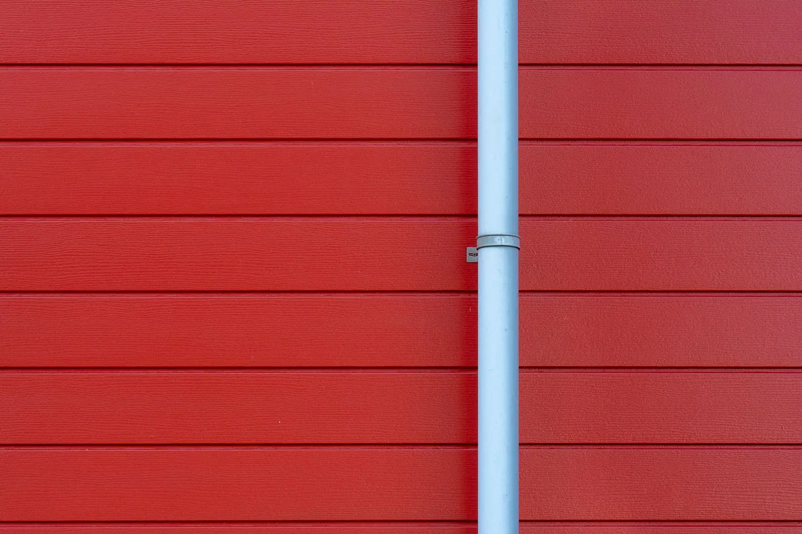
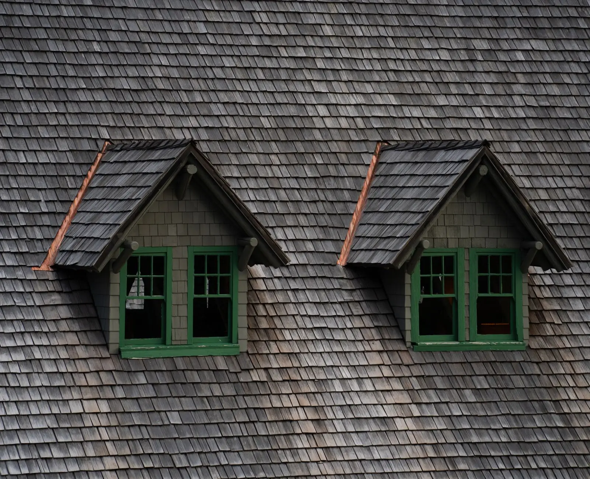
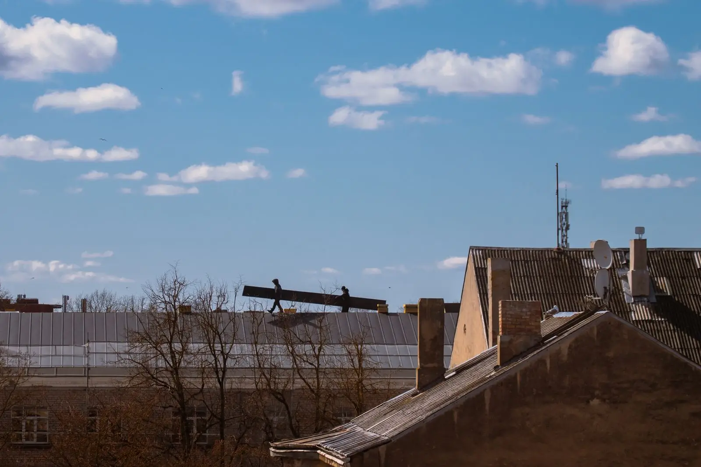
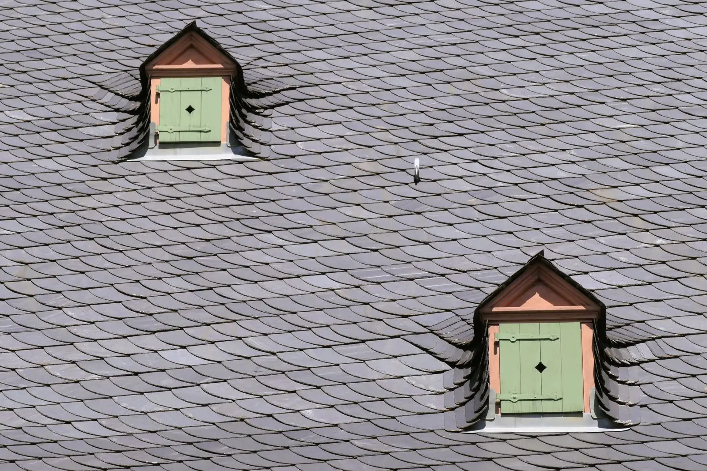

Roof repairs & replacements
Shingles from IKO, CertainTeed, GAF and Atlas; 3-tab, architectural and designer.
Georgia High Quality Construction · Georgia, United States
Roof repairs & replacements, Siding, Gutters — Georgia, United States.
What we do
Shingles from IKO, CertainTeed, GAF and Atlas; 3-tab, architectural and designer.
Siding repair and replacement to protect your home.
Seamless aluminium gutters and downspouts, plus repairs.
Interior and exterior painting, popcorn ceiling removal and wallpapering.
About
Georgia High Quality Construction & Roofing provides roofing, siding, gutters and painting across Georgia, with open communication throughout every job. Free inspections and free estimates.
Gallery
Sample imagery from Pexels standing in for Georgia High Quality Construction projects — to be replaced with real project photos.






Reviews
Service area
Enquire
Tell us about your project and we’ll get back to you.
What this preview improves